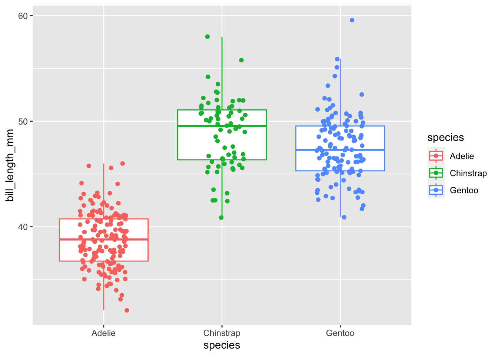
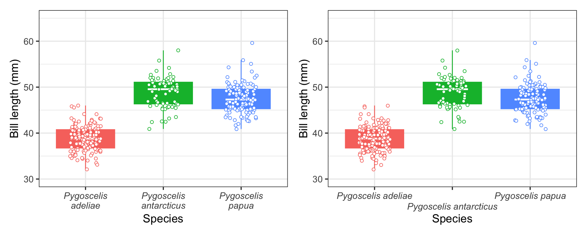

Make publication ready plots in R using ggplot2 and learn some new tips and tricks
R
ggplot2
tidyverse
Author
Affiliation
Daniel Padfield
University of Exeter
Published
February 24, 2023
Modified
March 3, 2023
Outline
I love making graphs! To explore data, to plot model results, just for the fun of making plots. I imagine we have all spent a huge amount of time making our plots ready for publication. Here we have a quick walkthrough of using ggplot2 to create graphs for publication, and a few tips and tricks we have learned along the way. If you have a favourite ggplot2 trick or tip then we would love for you to get in contact with us and for you add it to this walkthrough. Or if you’re feeling adventurous, clone the GitHub repo, add in your tip, re-render this quarto post, commit and push the changes, and start a Pull Request!
ggplot2 is a popular data visualisation package in R that allows users to create high-quality and customisable graphics for data exploration, scientific publications, and presentations. Developed by Hadley Wickham, ggplot2 is built on the principles of the Grammar of Graphics, which defines a set of rules for constructing and interpreting visualisations. With ggplot2, users can easily create a wide range of plots with advanced features such as facets, themes, and labels. Whether you are at the beginning of your science journey, or an old and grumpy PI, ggplot2 provides a powerful and flexible tool for visualising data and gaining insights from it.
Making a ggplot2 is like writing and following a recipe. You start with the first instructions (a call to ggplot()), the next instruction (like the next item of the recipe) is signalled using a +, a new line, and new instructions are added sequentially. ggplot2 works in a sequential fashion, later instructions add to what is already there, and sometimes counteract or override what previous instructions.
Making a plot using ggplot2 works much like a recipe
Prerequisites
Have R installed
Have the tidyverse package installed
Hopefully have a plot you want to make using ggplot2 or have some aesthetics you would like to change on a current plot.
Learning objectives
Learning objectives
This introduction should allow you to:
Have a basic understanding of the way in which ggplot2 “works” (i.e. the grammar of graphics)
Understand the format data needs to be in to be used in ggplot2
Make pubication-ready plots using ggplot2
Know where to learn more about ggplot2
Making plots with ggplot2
This walkthrough will lean heavy on tools from the tidyverse for data wrangling, and the palmerpenguins package for the example data. The first thing we will do is load in the necessary packages and load in the dataset we will use to create our tables.
# load in required packageslibrary(tidyverse)library(palmerpenguins)library(MetBrewer)library(patchwork)# load in datadata("penguins")d <- penguins# have a look at the dataglimpse(d)
This dataset contain data for 344 penguins, consisting of three species of penguins, collected from 3 islands in the Palmer Archipelago, Antarctica.
Preparing your dataset for ggplot2
For ggplot2, your data wants to be organised in long format, as opposed to wide.
Make a first plot using ggplot2
We will make a boxplot of how bill length changes between different species of penguin and add the raw points over the top. After making an initial plot call using ggplot(), different types of plot are specified using a geom_ function (e.g. geom_boxplot() for boxplots, geom_point() for points, geom_line() for a line graph). In each layer, the aes() function is used to tell ggplot2 which arguments depend on aspects of the dataset (e.g. col = species). Arguments set outside of aes() do not rely on the dataset (e.g. size = 3, col = ‘black’).
# make first box plot with raw pointsggplot(d, aes(species, bill_length_mm, col = species)) +# add first empty plot layergeom_boxplot(outlier.shape =NA) +# add boxplot, do not plot the outliersgeom_jitter(width =0.2) # add jittered raw points

Ok this looks nice. Here I put the aes() commands inside the original call to ggplot() as then those arguments are passed to all other layers (unless overridden by another aes()). This looks quite nice, but we can change a bunch of other things to make it look nicer.
Adding extra layers to ggplot2
There are a bunch of things I do as standard when I am making a plot (and a boxplot in particular):
Change the axis labels
Remove the legend if not needed
Change the axis limits
Change the theme and the text size
I dislike the default box plot so I colour the whole thing and then add a median bar in white (see below)
The important thing is to create your own style. To do what you think looks best, but all the options are documented nicely on their website. There are many more detailed resources around, so instead here we will document common things we do.
# make next box plot with raw pointsp1 <-ggplot(d, aes(species, bill_length_mm, col = species, fill = species)) +# add first empty plot layergeom_boxplot(outlier.shape =NA) +# add boxplot, do not plot the outliersstat_summary(geom ="crossbar", fatten =2, color ="white", width =0.4, fun.data =function(x){return(c(y = stats::median(x), ymin = stats::median(x), ymax = stats::median(x)))}) +# add median line to the boxplotsgeom_jitter(width =0.2, shape =21, fill ='white') +# add jittered raw pointstheme_bw(base_size =14) +# change theme to the one I like (others are available)labs(x ='Species',y ='Bill length (mm)',title ='Do different penguin species have different bill lengths?') +# change labelsylim(c(30,65)) +# change y limitsguides(col ='none',fill ='none') # turn off legendp1
And there - with relatively few lines of code - we have a plot that is ready for inserting into a publication. This can be easily saved out using ggsave()
# save out plot using ggsaveggsave('plot_one.png', p1, width =5, height =7)
Our favourite tips and tricks when making plots
I have a set of rules I follow when making plots with ggplot2. Some may be different to yours but they might have some use:
Generally I make my datasets BEFORE they go into ggplot2. This includes checking for NA and Inf values as these are super important to know about when visualising and analysing your data!
Plot the raw data whenever possible.
Layers work iteratively (later layers go on top of earlier layers) so make sure layers you want to be in the background (e.g. boxplot) are before layers you want to overlay (e.g. the raw data)
Only use stat_smooth() for exploring datasets. When plotting model predictions and confidence intervals, create a dataframe for them and then feed that into ggplot2.
Convert text size in geom_label() or geom_text() to pts used for labels
Lets say we wanted to add text to the plot. For example, in the plot above maybe we want to add the total number of penguins sampled for each species. By default geom_text() and geom_label() use a size guide that is different to the font size set for the axis and tick labels. However, Andrew Heiss has written a function to convert between those so we can easily define the font size in the regular way.
We will use functions from the tidyverse to create a data frame with the total number of penguins sampled and the max bill length for each penguin. Creating a data frame with the x and y coordinates of where I want the text to go on the plot, and a column for the label, is how I approach adding text labels to an existing ggplot.
# define function for ptspts <-function(x){as.numeric(grid::convertX(grid::unit(x, "points"), "mm")) }# calculate n for putting each species# remove NAs because they are not in the plotd_n <-filter(d, !is.na(bill_length_mm)) %>%group_by(species) %>%summarise(n =n(),max_bill_length =max(bill_length_mm)) %>%ungroup()# make plot with text# make next box plot with raw pointsp1 +geom_text(aes(x = species, y = max_bill_length +5, label =paste('n = ', n, sep ='')), d_n, size =pts(12), col ='black') # add text label
Soft wrap or stagger text labels to stop them overlapping
Ok these two are quite recent finds for me, and I absolutely love them. Sometimes your x labels might be really long, and the text can overlap with each other. I used to manually add new lines into my text by inserting \n where I wanted new text to me. But now two approaches exist that can automatically improve spacing between labels on the x axis. These are scales::label_wrap which can automatically create new lines for long axis labels and guide_axis() which can stagger axis labels to prevent overlapping.
We will demonstrate them both below, by adding the Latin names for each penguin species to the dataset. We will add them in using case_when() and then show both plots next to each other using patchwork which makes it really easy to combine individual plots. For free you also get code to italicise the axis labels as they are latin names!
d <-mutate(d, latin_name =case_when(species =="Gentoo"~"Pygoscelis papua", species =="Chinstrap"~"Pygoscelis antarcticus", species =="Adelie"~"Pygoscelis adeliae"))# first to softwrap the textp2 <-ggplot(d, aes(latin_name, bill_length_mm, col = species, fill = species)) +# add first empty plot layergeom_boxplot(outlier.shape =NA) +# add boxplot, do not plot the outliersstat_summary(geom ="crossbar", fatten =2, color ="white", width =0.4, fun.data =function(x){return(c(y = stats::median(x), ymin = stats::median(x), ymax = stats::median(x)))}) +# add median line to the boxplotsgeom_jitter(width =0.2, shape =21, fill ='white') +# add jittered raw pointstheme_bw(base_size =14) +# change theme to the one I like (others are available)labs(x ='Species',y ='Bill length (mm)') +# change labelsylim(c(30,65)) +# change y limitsguides(col ='none',fill ='none') +# turn off legendtheme(axis.text.x =element_text(face ="italic")) +# italicise x axis labelsscale_x_discrete(labels = scales::label_wrap(10)) # soft wrap labelsp3 <- p2 +scale_x_discrete(guide =guide_axis(n.dodge =2)) # stagger axis labelsp2 + p3

Either of these look great, but I think scales::label_wrap() is my favourite. So simple and so effective!
Automatically label facets with letters
One thing I often do is create faceted plots where each plot represents a different treatment or subset of the data. This is really easy to do with ggplot2 using facet_wrap(). However, the default facets are poorly labelled, are not numbered (generally with a, b, c for publications), and have a grey fill colour.
However, these are all issues we can solve to create publication-ready facet labels. We will demonstrate this by plotting a different trait on each facet (bill length, bill depth, flipper length, body mass). We will create the long data using pivot_longer() and use case_when() to make sure the labels on each facet are formatted correctly (i.e. spaces instead of underscores.
We can write a function to automatically label each facet, and change theme elements to align text and change the strip background colour.
long_format <- d %>%mutate(id =1:n()) %>%# create column to id each individual penguinpivot_longer(., cols =c(bill_length_mm:body_mass_g), names_to ='trait', values_to ='value') %>%# go from wide to long format for the traitsmutate(facet_label =case_when(trait =='bill_length_mm'~"Bill Length (mm)", trait =="bill_depth_mm"~"Bill Depth (mm)", trait =="body_mass_g"~"Body Mass (g)", trait =="flipper_length_mm"~"Flipper Length (mm)"))# create function to add letter to facet labelsletter_facets <-function (string){ len <-length(string) string =paste("(", letters[1:len], ") ", string, sep ="")return(string)}# create plotggplot(long_format, aes(species, value, col = species, fill = species)) +# add first empty plot layergeom_boxplot(outlier.shape =NA) +# add boxplot, do not plot the outliersstat_summary(geom ="crossbar", fatten =2, color ="white", width =0.4, fun.data =function(x){return(c(y = stats::median(x), ymin = stats::median(x), ymax = stats::median(x)))}) +# add median line to the boxplotsgeom_jitter(width =0.2, shape =21, fill ='white') +# add jittered raw pointstheme_bw(base_size =14) +# change theme to the one I like (others are available)labs(x ='Species',y ='Trait measurement') +# change labelsguides(col ='none',fill ='none') +facet_wrap(~facet_label, scales ='free_y', labeller =labeller(facet_label = letter_facets)) +# facet by the label column so the text is correct theme(strip.background =element_blank(),strip.text =element_text(hjust =0))
BINGO THIS LOOKS SHAMAZING.
Beautiful colour schemes with MetBrewer
I take a lot of time looking at colours to use in my plots. I have used viridis before, the colour schemes from colorbrewer, and Pokémon inspired colour schemes using palettetown. If you are so inclined, I have also started writing a small package (BrewerUoE) to access the new University of Exeter colours in R.
However, the most beautiful colour schemes I have ever seen are those provided by MetBrewer, which are palettes inspired by works at the Metropolitan Museum of Art in New York. They are just sensational, and easy to add directly to your plots! We show an example how to below, but there are more examples on MetBrewer’s GitHub.
Add a final NULL layer to allow you to comment out layers
It is common for me to play around with different layers and switch some on and off with a hashtag. If you hash out the final layer then the layer before it with a + carries on to the next set of code. If you add a final + NULL to the plot then this behaviour doesn’t happen.
Lets say we wanted to see the plot without the text labels. We can turn them off by hashtagging them out (in case we want to add them back in later), and the final NULL means the plot still works.
p1 +#geom_text(aes(x = species, y = max_bill_length + 5, label = paste('n = ', n, sep = '')), d_n, size = pts(12), col = 'black') + # add text labelNULL# add NULL layer to allow easy commenting out of layers
Awesome ggplot2 extensions
gpgplot2 is so popular as a plotting system that it has become its own ecosystem, with people developing tools and extensions to complement and build extra functionality to ggplot2. All of the extensions can be found here, but below are some of our favourites:
ggdist which provides geoms and stats for visualising distributions and uncertainty.
palettetown for Pokémon themed colour schemes. Whats better than Charizard colours!
Summary
We have shown how publication-ready plots can quickly be made using ggplot2, and also highlighted some functions and tips we have found super useful when we make plots. I have found that making plots in ggplot2 follows the 80/20 rule. You get 80% of the way there in 20% of the time, but then the finishing touches can take very, very long. Hopefully some of the code, approaches, tips, and links provided here help you get started!
All of the code here can be used to create your own plots Have fun!
Cedric Scherer’s whole website (I LOVE HIS VISUALISATIONS), but his tutorial for creating beautiful visualisations in ggplot2 is amazing.
Acknowledgements
We did not create this content alone! Inspiration, tips, and resources have been borrowed from multiple sources.
We are indebted to the tidyverse team of developers, and especially Hadley Wickham for creating and maintaining ggplot2.
Tips for creating the post, website, and format for the walkthroughs were taken from Stephanie Hicks’ Course website and source code. She has a great post introducing ggplot2 that goes into more depth than we do here.